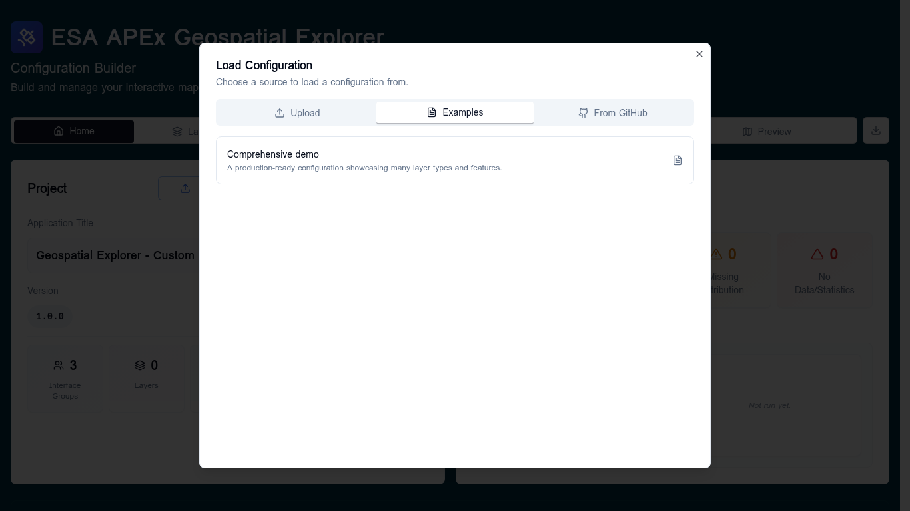

Loading and saving¶
The Configuration Builder never auto-saves to a server — your work lives in the browser session and is exported as a JSON file. There are four ways to load an existing config and one way to export.
Loading a config¶
From the Home tab click Load to open the Load Configuration dialog.

Three sources are available:
| Source | When to use it |
|---|---|
| Upload | A config.json you already have on disk. |
| Examples | Start from the bundled Comprehensive demo — useful for learning the app or as a template. |
| From GitHub | Browse a configured GitHub repo (default: ESA-APEx/apex_geospatial_explorer_configs) and pick any config.json from any branch. |
While loading, the dialog shows a four-stage progress bar: Parsing JSON → Normalizing structure → Validating schema → Done. If the schema validation fails, the dialog hands the offending file to a recovery dialog where you can fix or remove invalid entries.
The unsaved-changes guard¶
Anything that would discard the current config (loading a different one, clicking New, navigating away) prompts you with an Unsaved Changes warning when there are recent unexported edits. Confirm to continue or cancel and export first.
Exporting¶
From the Home tab use the Export dropdown:
- Quick Export (Default) — downloads the current config as JSON immediately.
- Export with Options… — opens the Export options dialog, where you can choose JSON ordering and other formatting options.
The exported file is what you ship to the APEx Geospatial Explorer host.
Starting fresh¶
Click New on the Home tab to reset the builder to an empty configuration. The unsaved-changes guard applies here too.